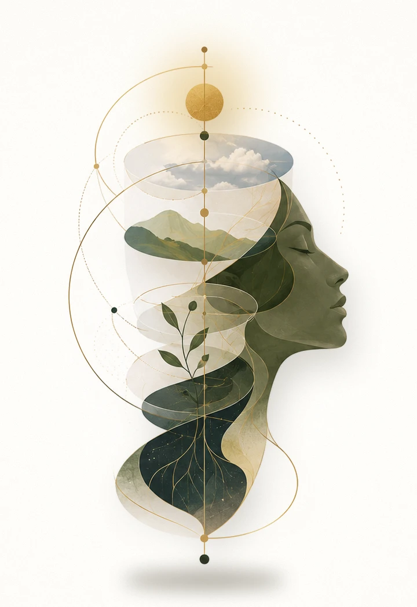

Sanskrit · the seer, the one who witnesses
It began with witnessing.
Drishta started with a simple practice: watching our own thoughts, analysing them, and slowly realising what they were telling us. Only later did we find the word for it, metacognition, and the science behind it.
The Sanskrit draṣṭā, the one who witnesses, named what we were already doing. Drishta makes that witnessing a learnable, shared practice.
One tree, many leaves.
Lived experience, community and a little nerdy research, all growing from the same roots.
Tap a coloured leaf to turn it over
Every gathering is held with these intentions
- Empathy
- Kindness
- Openness
- Tolerance
- Love for nature and animals
- Civic sense
- Brotherhood
For Zubeen Da,
our eternal mentor.
Zubeen Garg taught us what it means to love people, nature, our land, our culture and our history, with kindness at the centre of it all. He loved the Brahmaputra, the birds, the sky and the air, as if they loved him back. He used to speak of the Nahor tree and its value.
The Nahor flower is part of Drishta's mark so that his spirit stays with every gathering we hold. Its new leaves open a tender crimson and slowly deepen into green, the way a mind grows when it learns to witness itself.
Currency is community.
Drishta's community runs on social capital: relationships, trust and shared practice. To plant it and keep it growing, the work that earns sustains the work that gives.
- The engine
Think Studio
Design, systems and strategy consulting for government, corporates and education.
- The bridge
Corporate gatherings
Drishta retreats for teams, bringing metacognition into the workplace.
- The heart
Community gatherings
Funded by the two above, open to people through value exchange.
Register your interest.
The inaugural Drishta gathering takes place in late October 2026, followed by a residential retreat. Write to us to receive dates, venue and participation details.
adutta03@unfoldedfuture.comDetails to be announced
Founders.
Akanshya Dutta
FounderResearcher and consultant · Visiting Faculty, Design · DTU. Policy design, monitoring and evaluation, metacognition.
Dr Partha Pratim Das
Co-founderAssistant Professor, Design · DTU. Systems design, interaction design, pedagogy.
Both of us are artists at heart. We feel most ourselves among trees, mountains and quiet, and Drishta is our way of sharing that.